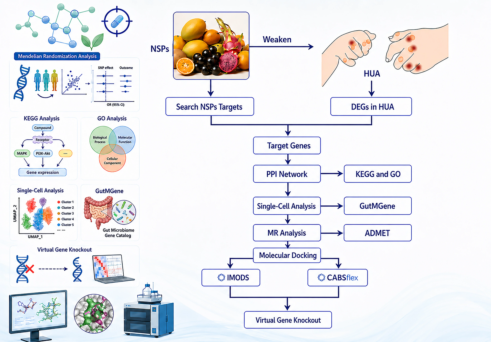

👋 About
Hi, I'm Jiacheng "Karcen" Zheng (It's pronounced roughly like "Jyah-chung Jung."). I will join the Ma Yinchu School of Economics, Tianjin University as an incoming MPhil student in Applied Economics
(2026–2029), with research interests in Data Science applications in economics research.
I earned my B.Eng. in Bioengineering from the Marine College, Shandong University (2022–2026, GPA 86.24/100, Excellent Graduate). I took dual-degree track in International Politics & International
Economics and Trade at the Northeast Asian College (2022–2023). Previously I studied Chemical Engineering at Dalian University of Technology (2019–2021, GPA 88/100, top 7.4% of my cohort) before restarting my
undergraduate studies.
In research, I served as a research assistant at the Institute of International Studies & the Center for Regional and Country-Specific Data Analytics, Shandong University (2023–2025, PI: Prof. Yuan Li), working on input–output
analysis and global value chains. In summer 2024 I joined the Bartlett School of Sustainable Construction, University College London (UCL) team to build the IPCC reference citation database. In 2025 I contributed to
generative AI alignment research at The Hong Kong University of Science and Technology (HKUST), which was accepted at NeurIPS 2025 (Spotlight) together with Peking University collaborators.
Data Science
Machine Learning & NLP
AI for Economics
Health Economics
Econometrics
Behavioral Economics
🎓 Education
 Tianjin University
Tianjin University
Sep 2026 – Jun 2029 (Expected)
MPhil in Applied Economics · Ma Yinchu School of Economics
Advisor: Asst. Prof. Shenshen Yang. Research themes: Theoretical Econometrics, Causal Inference, Missing Data, Public Health Policy.
Health Economics
Econometrics
Finance
Data Science
 Shandong University
Shandong University
Sep 2022 – Jun 2026
B.Eng. in Bioengineering · Marine College
GPA 86.24/100 (5/50, top 10%). Excellent Graduate (roughly summa cum laude). Dual-degree program track in International Politics & International Economics and Trade at the Northeast Asian College
(2022–2023).
Undergraduate thesis: Is More Complexity Always Better? Hepatotoxicity Prediction of Marine Natural Products with in vivo Validation in Danio rerio — ranked #1 in the defense panel.
 Dalian University of Technology
Dalian University of Technology
Sep 2019 – Mar 2021
B.Eng. in Chemical Engineering · School of Chemistry
GPA 88/100 (top 7.4% of the cohort). Withdrew in 2021 and retook the Gaokao.
Chemical Engineering
Mathematical Modeling
Data Science
📝 Publications & Papers
Biology 2026 · Article

Pengcheng You, Anye Chen, Qiancheng Feng, Junhong Hou, Jiacheng Zheng, and Hao Chen*
Biology, 2026, 15, 1150
NeurIPS 2025 · Spotlight

Boyuan Chen, Donghai Hong, Jiaming Ji, Jiacheng Zheng, Bowen Dong, Jiayi Zhou, Kaile Wang, Juntao Dai, Xuyao Wang, Wenqi Chen, Qirui Zheng, Wenxin Li, Sirui Han, Yike Guo, & Yaodong Yang
NeurIPS 2025 ( Spotlight · ≈3–5% acceptance rate
)
Agglomeration & Inequality

Jamal Khan, Jiacheng Zheng, Maaz Ahmad, & Zubair Alam Khan
Journal of Chinese Economic and Business Studies, 24(2), 317–340 (2026)
Social Filter Theory

Riccardo Crescenzi & Andrés Rodríguez-Pose (Chinese translation by Jianhui Ren et al.)
Beijing Economic Management Press (2024)
Contributed the translation of Chapter 3: Geographical Accessibility and Human Capital Accumulation . The book received the 3rd Prize of the "Hundred Works" Project for Outstanding Achievements in Social Science
Research in Shanxi Province.
Financial Sector in China

Jamal Khan, Yuan Li, & Qaiser Jamal Mahsud
Structural Change and Economic Dynamics, 70, 33–44 (2024)
A network perspective on the financial sector's role in post-crisis industrial linkages and structural transformation. Acknowledged for programming and data contributions.
Belt and Road Initiative

Yuan Li & Jamal Khan
Peter Lang
Through detailed analysis, Winds from the East highlights how the BRI is driving employment opportunities, influencing global standards, and shaping new economic landscapes. Each chapter investigates critical dimensions, including
mega-infrastructure projects, trade facilitation, and the initiative's broader implications. By addressing both the opportunities and challenges of the BRI, this book provides a valuable resource for policymakers, researchers, and anyone seeking to understand the
evolving dynamics of this global initiative. This book offers a nuanced perspective, encouraging informed decision-making and deeper insights into the BRI’s role in the global economy. Whether you are seeking to understand the BRI’s role in reshaping trade
patterns, promoting inclusive growth, or influencing global economic governance, this book offers a rich analysis supported by rigorous research.
📣 Conference Presentations
31st International Input–Output Association Conference
2025 · Malé
Oral presentation — withdrawn for health reasons
Linkages and Structural Changes in the Chinese Financial Sector, 1996–2018.
10th International Workshop on RUSE in China
2023 · Peking University
Oral presentation
Agglomeration Economies and Regional Inequality in Provincial China.
🔬 Research & Internship Experience
Research Assistant · Tianjin University
Sep 2025 – Present
Ma Yinchu School of Economics & College of Management and Economics (CoME)
-
Research in health economics and financial economics, funded by two NSFC projects.
Research Intern · The Hong Kong University of Science and Technology (HKUST)
Big Data Institute of HKUST & Hong Kong Generative AI Research and Development Center Limited (HKGAI)
Feb – May 2025 · Remote
-
Data-science-driven preference alignment research for multi-turn, multi-modal large language models.
-
Collaborated with Jiaming Ji, Boyuan Chen and others at Peking University; the paper was accepted at NeurIPS 2025 (Spotlight).
Research Assistant · University College London (UCL)
Jul – Aug 2024 · Remote
The Bartlett School of Sustainable Construction · PI: Prof. Zhifu Mi
-
Contributed to the reference citation network analysis of IPCC Assessment Reports (Working Group II, AR6), building reference databases and analytical toolchains.
Research Assistant · Shandong University · Institute of International Studies
Mar 2023 – Mar 2025 · Weihai
Regional and Country-Specific Data Analytics Center · PI: Prof. Yuan Li & Dr. Jamal Khan (now Associate Professor)
-
Helped build the center's data infrastructure; took charge of programming, data visualisation and writing support.
-
Focused on input–output analysis and global value chains, applying ML/DL & NLP techniques to data-driven economic modelling.
Community Leader on Secondment · Volunteering & Community Work
2024 – Present · Weihai
Tian Village (university social practice project)
-
After-school tutoring and popular-science outreach for rural primary and middle-school students.
-
Public first-aid training (CPR, Heimlich manoeuvre) and public health awareness campaigns.
Management Trainee, Marketing
Summer 2023 · Weihai
Golden Education · Mentor: Jihai Zhao
-
Planned and executed campus branding campaigns; supported new-media operations and on-campus marketing growth.
🏆 Scholarships & Travel Grants
Excellent Graduate
Shandong University · 2026
National Encouragement Scholarship
Ministry of Education, P.R. China · 2025
CN¥ 6,000 ≈ $841
Merit Scholarship (Third-class)
Shandong University · 2025
CN¥ 1,000 ≈ $139
IIOA Travel Grant
International Input–Output Association · 2025 (initially awarded via the COMPASS track, later revoked due to budget adjustment)
$3,000
National Encouragement Scholarship
Ministry of Education, P.R. China · 2023
CN¥ 5,000 ≈ $694
Merit Scholarship (Third-class)
Shandong University · 2023
CN¥ 1,000 ≈ $139
PwC Open Day Invited Delegate
PwC Jinan · 2023 (one of two fully funded delegates from Weihai via the Golden Education Elite Business Challenge)
CN¥ 450 ≈ $62
National Scholarship
Ministry of Education, P.R. China · 2020
CN¥ 8,000 ≈ $1,111
Second-Class Outstanding Student Scholarship
Dalian University of Technology · 2020
CN¥ 500 ≈ $69
Outstanding Youth League Member / Spiritual Civilization Scholarship
Dalian University of Technology · 2020
CN¥ 400 ≈ $56
* Approximate exchange rate: 1 USD ≈ 7.20 CNY.
🛠 Projects, Tools & Writing
📊 Open-Source Tools & Notes
📝 Selected Zhihu Columns （maybe useful）
🏁 Competitions & Team Projects
iTooth with a Smooth Tongue — Public-benefit oral health internet solution
2022 · 13th National University E-commerce "Innovation, Creativity & Entrepreneurship" Challenge
Team Leader
An internet platform that promotes public oral health literacy and screening. Won Second Prize in the Shandong University regional round.
Teach for China (Bilibili) — Public welfare courses for rural students
2023
Volunteer Teacher
Recorded popular-science course videos for primary and middle-school students in less-developed regions, helping advance educational equity (Teach For China project).
💡 Skills & Interests
Software
PythonMicrosoft OfficeAdobe Creative Suite
SPSSLaTeXMATLABOrange 3
StataRGit / GitHubQGIS
Gephi / NetworkX
Languages
Chinese · Native
English · IELTS 7.0
Mathematics & Physics Foundation
- Calculus I · 98 / 100
- Calculus II · 92 / 100
- Linear Algebra · 90 / 100
- Probability & Statistics · 88 / 100
- University Physics I · 98 / 100
- University Physics II · 100 / 100
Full transcript available on request: karcenzheng@gmail.com
Research Interests
Health Economics
Behavioral Economics
Regional Economics
Poverty
Data Science in Economics
fMRI
🤝 Service & Affiliations
Positions of Responsibility
Vice President
2024 – 2025
‘Shanhai’ Political Observation Club · Student society under the School of Marxism, Shandong University
Head of External Relations
2023 – 2024
‘Shanhai’ Political Observation Club · Student society under the School of Marxism, Shandong University
Secretary
2022 – 2023
Dept. of Student Rights & Mental Health · School of Northeast Asian Studies, Shandong University
Dorm / Residential Council Head
2019 – 2021
Dalian University of Technology
Vice Minister (New Media)
2019 – 2021
'Yin Ji Guang Ying' New Media Studio · Dalian University of Technology
Vice Minister (Culture & Arts)
2019 – 2020
Dept. of Culture & Arts · School of Chemistry, Dalian University of Technology
Referee Services
Journal of Chinese Economic and Business Studies
Memberships
References